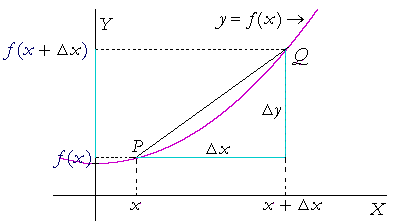

Formal Definition of the Derivative
Goal: Use the slope formula $m = \frac{\Delta y}{\Delta x}$ and a limit to derive the formal definition of a derivative.
Recall that the derivative $f'(x)$ is simply a function that represents the slope of $f(x)$ at any given value of $x$.
Also, recall that the slope between two points that lie on a curve $f(x)$, is: $$slope = \frac{\Delta f(x)}{\Delta x} = \frac{\Delta y}{\Delta x} = \frac{rise}{run}$$
We can derive the derivative (haha see what I did there?) by bringing those two points infinitely close together. Notice how as the two points get closer and closer together (as $\Delta x$ goes to $0$), the line between the two points is becoming a better and better representation of the tangent line.
Now that we know what our goal is and that we can visualize our goal, let's put it in math terms.

If we want to find the slope from point $P$ to point $Q$, we can use the following formula, where $m_{PQ}$ is that slope. $$m_{PQ} = \frac{\Delta y}{\Delta x} = \frac{f(x+\Delta x) - f(x)}{x+\Delta x - x} = \frac{f(x+\Delta x) - f(x)}{\Delta x}$$
Remember that the derivative is the tangent line slope at a single point. We have the slope between two points - how do we find the slope at the single point $P$? We take it to the limit!
$$m_{PQ} = \frac{f(x+\Delta x) - f(x)}{\Delta x}$$ $$f'(x) = \lim_{\Delta x \rightarrow 0}\frac{f(x+\Delta x) - f(x)}{\Delta x}$$Wait...so what'd I just do there? I used the limit to bring my two points infinitely close together by driving their separation ($\Delta x$) to $0$.
That's the entire proof for the formal/limit definition of the derivative! $$f'(x) = \lim_{\Delta x \rightarrow 0}\frac{f(x+\Delta x) - f(x)}{\Delta x}$$